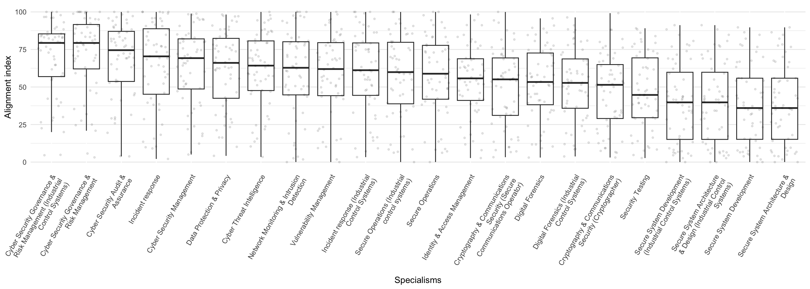
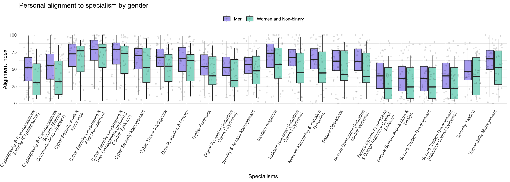
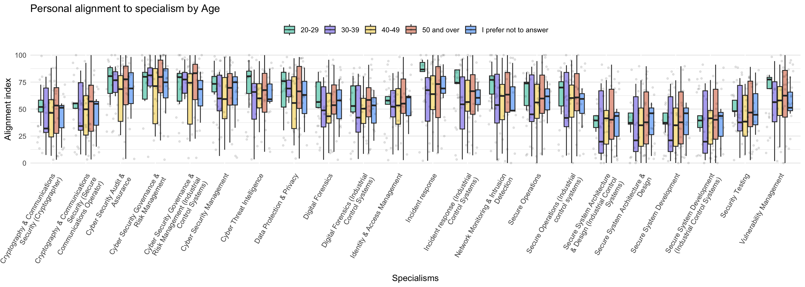
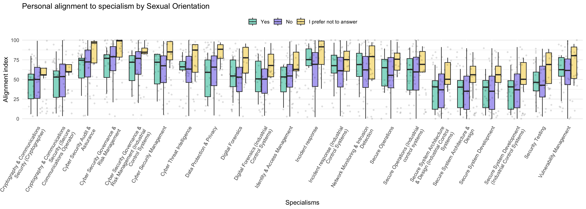
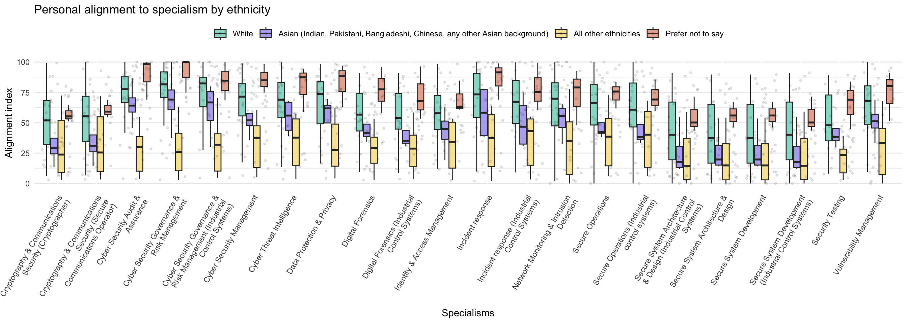

3 Professionalisation and Inclusion
3.1 Professionalizing Cyber Security in the UK
Concerns about the adequacy of the UK’s cyber security workforce, and its ability to protect society, state and economy, have driven a number of interconnected policy efforts, aiming to:
formalize cyber security education,
bring more people into the field,
give recognition to those with cyber security expertise,
to ensure that adequate cyber security knowledge is integrated into related professions, and
to enable employers to better understand what they need from their cyber security employees.
The first UK National Cyber Security Strategy, published in 2016, identified the need for government to do more to support the development of the cyber security profession1. As part of the implementation of the Strategy, the Department for Digital, Culture, Media and Sport launched a 2018 proposal and consultation on the creation of the UK Cyber Security Council (UKCSC). The consultation recognised that there were existing forms of recognition, such as offered by the Institute of Information Security Professionals, which had received a Royal Charter in 2018, and the International Information System Security Certification Consortium (ISC2), which governs the international CISSP (Certified Information Systems Security Professional) qualification, but argued that there were outstanding issues with coverage (some kinds of cyber security expertise were not covered, or partially covered), and equivalence. The UKCSC was thus set up to “act as a governing voice for the cyber security profession in the UK” (Ministry of Defence 2021), and was launched in 2021.
Pillar 5 of the UK National Cyber Security Strategy 2022-2030, is the objective to ‘develop the right cyber security skills, knowledge and culture’ so that ‘sufficient, skilled and knowledgeable professionals fulfil all required cyber security needs’ (Cabinet Office 2022). This is to be delivered through “consistent taxonomies, standards and pathways” providing “diverse and fulfilling cyber security careers” and wider status recognition through accreditation and standardisation. The UKCSC’s work has thus become central to the national strategic vision.
In pursuit of these goals, the UKCSC developed a ‘Cyber Careers Framework’ which identifies four levels of expertise (Associate, Practitioner, Principal, and Chartered) across a set of 15 specialisms. Assessments of applicants for recognition are carried out by member organisations of UKCSC, who receive a license for specific specialisms: currently the Chartered Institute of Information Security, The Cyber Scheme, and CREST. Recognition is being delivered in a phased manner, and the first chartered cyber security professionals (ChCSP) were recognised in October 2023. The roll-out process has met with some difficulties, with only 6 specialisms currently available, and a relatively modest uptake so far. One challenge has been in the definition of specialisms, as some of these were inherited from pre-existing schemes such as the NCSC’s Certified Cyber Professional2, whereas others have been defined from scratch. This has led to some inconsistencies in the style and extent of requirements across specialisms. It is widely recognised that the Cyber Careers Framework will need to evolve and improve over time, something that is necessary in any case to keep pace with changing technologies, threats and practices. Gathering and interpreting data will be important in enabling a responsive approach to cyber security problems and practices, on its workforce and the distribution of expertise, in order to maintain its alignment and relevance in the years ahead.
3.3 The value of diversity
While considerations of social closure are sufficient to illustrate why diversity is a core priority for the legitimacy of the UKCSC, an even stronger argument can be constructed based on research into the value of diversity. Sociologists have argued that organisational or institutional diversity has value as a resource during times of economic transition (Grabher and Stark 1997). Scholars in safety studies have argued that overly homogeneous patterns of reasoning and valuation can ‘incubate disaster’, a central problem for organisations that operate in safety critical contexts (Dekker and Pruchnicki 2014; Vaughan 1996). In Karl Weick’s classic studies of high reliability organisations, diversity can be understood as a source of ‘requisite variety’ that enables organisations to avoid accidents.
Whether team members differ in occupational specialities, past experience, gender, conceptual skills, or personality may be less crucial than the fact that they do differ and look for different things when they size up a problem. If people look for different things, when their observations are pooled they collectively see more than any one of them alone would see. However, as team members become more alike, their pooled observations cannot be distinguished from their individual observations, which means collectively they know little more about a problem than they know individually (Weick 1987).
Several studies have indicated that hiring people from diverse backgrounds provides value in broadening organisational repertoires of thought and practice, and enhancing the potential to innovate (Herring 2009). Researchers have also argued that homogeneity can be a source of problems, with evidence, for instance, that homogeneity leads to bubbles and inefficient markets (Levine et al. 2014). The 2020-2021 NCSC/KPMG Decrypting Diversity reports explicitly reference this line of thinking, arguing that diversity in the workplace brings “benefits including better financial performance, increased creativity and innovation, greater employee satisfaction, lower absenteeism and stronger talent retention” (NCSC 2020). In other words, diversity is valuable not just because inequality and discrimination are unacceptable, but also because it is a driver of innovation and ultimately a more secure society3.
3 Note, however, that critical voices
3.4 The status quo
The ‘Decrypting Diversity’ reports painted a mixed picture of diversity in the cyber security profession. On the one hand, the proportion of the cyber profession that identifies as coming from a BAME (Black and Minority Ethnic) background, and the proportion that identifies as Lesbian, Gay and Bisexual (LGB), were broadly in line with national figures. Data on Trans people was insufficient to make reliable claims, and more research is needed in areas such as this. Gender is well-recognised to be an issue for cyber security, with survey respondents identifying as male outnumbering those identifying as female 2:1 in the Decrypting Diversity studies. Here, the cyber security profession needs to engage with broader efforts, as the same gender imbalance is found across the technology workforce. Socio-economic backgrounds were also skewed, for instance with those who had attended private schools over-represented. Furthermore, even in areas such as ethnicity or sexuality, where the profession was broadly in line with the general population, survey respondents noted that people from BAME backgrounds or who identified as LGB were more likely to have faced discrimination in the workplace.
The Decrypting Diversity report focuses on the experiences of people within the cyber security profession, and although it was intended to be part of a series of annual studies, only two were carried out. Some of this research was folded into the ‘Cyber Security Skills in the UK Labour Market Survey’4, and like Decrypting Diversity, these ongoing surveys focus on individual diversity, and do not address connections with diversity of expertise, either at the personal level or at the level of the key problems that the cyber security profession is expected to address in work contexts. They do, however, point to the need for further research. The 2025 Cyber Security Skills in the UK Labour Market Survey pointed, for instance, to concerning indications that ethnic diversity has been trending downwards within senior cyber security roles, from 15% in 2021, to 8% in 2025.
Diversity of expertise is less well studied than individual diversity in cyber security, though recent work building on the CyBOK framework is aiming to address this. Developing a ‘knowledge profiling’ approach, Nautiyal and Rashid propose a tool for organisations to assess their internal expertise, key certifications, and expertise brought by partner organisations (Nautiyal and Rashid 2024). Other recent work uses CyBOK to analyse the ‘cyber skills gap’ through the analysis of job adverts (Attwood and Williams 2023). The Cyber Expertise Diversity Survey was developed in this vein. Like these studies, we focus on the methodological possibilities, examining how the diversity of expertise may be made visible and actionable. Our approach aims to make connections between diverse profiles of expertise among professionals, professional frameworks, and the alignment of both of these with problem scenarios.
3.5 Data analysis
3.5.1 Alignment of respondents with the specialisms
The visualisation below shows an overall view of how our respondents aligned with the UKCSC specialisms. The variance was relatively modest, with the highest average alignment roughly double that of the lowest average alignment. Looking at the individual boxplots, we note that our sample spanned a wide range, including respondents that scored very highly and very low in each area.

Of particular interest for our analysis is breaking down the overall picture according to key attributes.
3.5.2 Alignment based on key attributes
3.5.2.1 Gender
When we break out alignment by gender we notice that people identifying as men were on average better aligned than those identifying as women or non-binary in all areas apart from Cyber security audit and assurance, Cyber security governance and risk management and Data protection and privacy. We have ignored ‘prefer not to say’ in this case.

3.5.2.2 Age
The same view but broken down by age shows that, interestingly, in our sample younger respondents were not less well aligned than older respondents. This could reflect the fact that younger cyber security professionals may have studied degrees relating to cyber security that did not exist when older respondents were students (degrees that have syllabuses that aim at comprehensive coverage). Understanding this view from a larger dataset would be illuminating about how the profile of the profession is changing.

3.5.2.3 Sexual orientation
In the visualisation below, respondents were asked ‘Do you identify as lesbian, gay or bisexual?’.

Our study shows encouraging indicative results that sexual orientation does not significantly map on to differences in alignment with specialisms.
3.5.2.4 Ethnicity
Due to having a low number of respondents in some categories, we’ve grouped data into three main categories: white, Asian and ‘all other ethnicities’.

It is potentially concerning to observe that respondents identifying as white were, on average, most well aligned with every single specialism. This observation alone could justify further research.
3.5.2.5 Further analysis
The suggestive patterns we observe, particularly in relation to gender and ethnicity, warrant further investigation in order to investigate the explanation. Candidate factors include:
Sampling bias: Our sample may not be representative and these differences may be less apparent in a larger sample
Methodological factors, for instance if white and/or male respondents tend to rate their own expertise more highly than others, all else being equal.
Biased specialisms: The specialisms may be defined in ways that favour expertise belonging to certain groups over others
Structural inequalities reflected in skewed distributions of expertise across different ethnic groups
More research is needed to disambiguate these factors, and to build a dataset that would allow us to control for factors such as years of experience. In our recommendations we call for further Decrypting Diversity studies that could address this gap. In parallel with this, any specialisms that are likely to help to rebalance professional recognition in these direction should be developed. Two examples are security human factors and security awareness. Understanding what specialisms like these could look like could help future analysis to investigate the implications for inclusivity of possible future adjustments to the Cyber Careers Framework.
3.5.3 Respondents’ views on Chartered status
Respondents were asked for general comments on the professionalisation of cyber security, and comments that referred directly to the Chartered status were evenly split: 5 responses were generally positive, and 5 were either negative or mixed. Starting with positive comments, respondents mentioned the same kinds of drivers around recognition and careers that have featured in the policy case for professionalisation.
On the other hand, other participants offered more critical perspectives.
The issues raised here are wide-ranging. The potential disconnect between policy priorities and ‘on the ground’ perceptions of the value of recognition should be of concern to UKCSC and wider government policymakers. If people doubt whether professional statuses really map onto the realities of expertise and how it is valued, then they may be less willing to seek accreditation or value it in others. There is a cost to sustaining the UKCSC that will be paid by professionals, their employers, and ultimately their employers’ customers. In addition to being confident that professionalisation is, and will, deliver value for society (through reduction of risks and harms), it is necessary for the UKCSC and government policymakers to find ways to persuade professionals that they should share this confidence. This is one of the central challenges for UKCSC and its stakeholders in central government. Making adoption mandatory in certain sectors is likely to reinforce perceptions that accreditation is a cost and burden on individuals and organisations, but if a more organic process of adoption is slow, this may reinforce perceptions that the payoffs to individuals and organisations are likely to arrive far in the future. One strategy would be to focus on the value of accreditation for early career professionals (who may retain and uplift their accreditation as their careers progress).
Another strategy is indicated by figures in the recent 2025 Cyber Security Skills in the UK Labour Market survey5. Businesses were asked which of the Cyber Careers Framework specialisms they were finding hard to recruit for and 16% reported that they were finding it hard to fill vacancies in an area not covered by the Framework specialisms, a response that ranked equal fourth, and only behind cyber security audit and assurance, cyber security governance and risk management, and cyber security management. The UKCSC should ensure that cyber security professionals in all areas can see their expertise recognised in the Cyber Careers Framework. While further research is needed to be confident about which specialisms might fill this gap, security human factors and security awareness are clear candidate areas, and it may be advisable to start work developing such candidate specialisms.
3.6 Recommendations
Specialist surveys on diversity in cyber security (Decrypting Diversity) should be revived to ensure good quality data is available. They should be extended to gather more detailed data on respondents’ expertise, for example using the CyBOK framework. This would enable evidence to be gathered about correlations between diversity characteristics and the alignment of professionals with the UK Cyber Security Council Cyber Careers Framework specialisms. Regular surveys would enable the analysis of how this alignment is changing over time.
The UK Cyber Security Council should commence work on new candidate specialisms to address the current lack of coverage of security human factors and security awareness. The latter could be based on the European Cybersecurity Skills Framework ‘Cybersecurity educator’ role.
3.2 Social closure
Professionalisation can be analysed sociologically through the lens of social openness and social closure. The concept of social relationships being ‘open’ or ‘closed’ has deep roots in sociology, and is a building block of Max Weber’s classic analysis of social action (Weber 2019[1921]). Social closure is an umbrella term for the ways in which groups construct and maintain monopolies over opportunities, by including some people and excluding others. Understanding how and why closure occurs is key to our understanding of social structure and power. It can operate at multiple levels. Even where opportunities are formally open, groups may nevertheless be able to maintain control over resources through influencing access to jobs or status, for instance through cronyism or nepotism. Closure can create durable barriers to entry or ‘glass ceilings’ that limit opportunities. Social closure can be durable because, once they exist, monopolies on resources tend to create an alignment of interest among group members, as they have a common interest in maintaining the status quo and resisting change. Weber considered guilds to be an ‘archetype’ of closure where it is motivated by a cooperative monopolisation of (resource) acquisition, and under the rubric of ‘occupational closure’ the sociology of professions has studied professionalisation as an important example of social closure in the modern age.
There is a tension between occupational closure and the values of social liberalism that promote fair access and equality of opportunity. In the cases of the professions, the justification of occupational closure involves achieving a balance between competing moral principles: on the one hand, for buildings to be safe, for accounts to be trustworthy, for all to have fair and equal representation under the law, for healthcare to be safe, and so on, it is necessary to restrict who can practice engineering, accountancy, law and medicine to those who have met a certain standard of qualification and committed to accepted standards of conduct. On the other hand, while entry into these professions may be formally open and non-discriminatory, entrants often need considerable capital—social capital in the form of social networks giving access to opportunities for apprenticeships and experience, cultural capital in the form of the ability to ‘fit in,’ be ‘taken seriously’ and generally navigate their way within professional communities, and financial capital in the form of resources to support what are often extended periods of training or low pay at the start of careers—and so the institutional structure of the professions tends to reinforce existing social inequalities. It is not by accident that the traditional British middle classes are commonly referred to as ‘the professional class’. Professional bodies, such as the British Medical Associations, the Law Society, the Association of Chartered Certified Accountants, and so on, thus understand their mission as having two sides: one that focuses on ensuring standards of competence and conduct are met, and the other intervening to improve and support equitable access to the profession, through special initiatives, financial support, community engagement, communication campaigns, and research. In short, professional bodies’ interest in equality, diversity and inclusion should not be seen as a separate side project, but as a core project that ensures the social legitimacy of occupational closure, by ensuring and demonstrating that the profession is a vehicle for, and not an obstacle to, fair access.
The success of the project to professionalise cyber security in the UK will depend on the ongoing legitimacy of bodies such as the UKCSC. Cyber security is a young profession, and legitimacy cannot rest on a received understanding of its members as an elite group (as is arguably the case with doctors or lawyers). It is crucial to show how diversity will be understood and managed in the years ahead, so that achievement can be celebrated, and so that the contribution of diversity to the delivery of cyber security outcomes is part of the vision for the sector. This will require that professional bodies are attentive to, and responsive to, challenges of diversity.